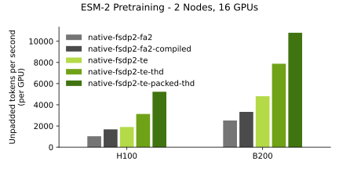

BioNeMo Recipes
BioNeMo Recipes provides an easy path for the biological foundation model training community to scale up transformer-based models efficiently. Rather than offering a batteries-included training framework, BioNeMo Recipes provide model checkpoints with TransformerEngine (TE) layers and training recipes that demonstrate how to achieve maximum throughput with popular open-source frameworks and fully sharded data parallel (FSDP) scale-out.
Overview
The biological AI community actively prototypes model architectures and needs tooling that prioritizes extensibility, interoperability, and ease-of-use, alongside performance. BioNeMo Recipes addresses this by offering:
- Flexible scaling: Scales from single-GPU prototyping to multi-node training without complex parallelism configurations
- Framework compatibility: Works with popular frameworks like HuggingFace Accelerate, PyTorch Lightning, and vanilla PyTorch
- Performance optimization: Leverages TransformerEngine and megatron-FSDP for state-of-the-art training efficiency
- Research-friendly: Contains hackable and readable code that researchers can easily adapt for their experiments
Performance Benchmarks

Training benchmarks for ESM-2 using the
esm2_native_te recipe.
Use Cases
The use cases of BioNeMo Recipes include:
- Foundation Model Developers: AI researchers and ML engineers developing novel biological foundation models who need to scale up prototypes efficiently
- Foundation Model Customizers: Domain scientists looking to fine-tune existing models with proprietary data for drug discovery and biological research
Supported Recipes and Models
| Directory | Description | FSDP | BF16 | FP8[1] | THD | FP8 + THD | MXFP8[2] | NVFP4[3] | CP |
|---|---|---|---|---|---|---|---|---|---|
models/amplify,available on Hugging Face |
TE accelerated protein BERT, Amgen | ✅ | ✅ | ✅ | 🚧 | 🚧 | ❌ | ❌ | ❌ |
models/esm2,available on Hugging Face |
TE accelerated protein BERT, Meta | ✅ | ✅ | ✅ | ✅ | ✅ | ✅ | ✅ | ✅ |
models/llama3 |
TE accelerated Llama 3, Meta | ✅ | ✅ | ✅ | ✅ | ✅ | ✅ | ✅ | ✅ |
models/mixtral |
TE accelerated Mixtral-style MoE model | ✅ | ✅ | ✅ | ✅ | ✅ | ✅ | ✅ | 🚧 |
models/qwen |
TE accelerated Qwen2.5/Qwen3 model | 🚧 | ✅ | ✅ | ✅ | ✅ | ✅ | ✅ | ❌ |
recipes/esm2_native_te |
Recipe for esm2/amplify + native PyTorch |
mFSDP, FSDP2 | ✅ | ✅ | ✅ | ✅ | ✅ | ✅ | ✅ |
recipes/llama3_native_te |
Recipe for llama3 + native PyTorch |
FSDP2 | ✅ | ✅ | ✅ | ✅ | ✅ | ✅ | ✅ |
recipes/opengenome2_llama_native_te |
OpenGenome2 recipe for llama3 + native PyTorch |
FSDP2 | ✅ | ✅ | ✅ | ✅ | ✅ | 🚧 | ✅ |
recipes/codonfm_native_te |
Native PyTorch recipe for CodonFM | FSDP2 | ✅ | ✅ | ✅ | ✅ | ✅ | ✅ | ❌ |
recipes/esm2_accelerate_te |
Recipe for esm2/amplify TE + HF Accelerate |
FSDP, FSDP2 | ✅ | ✅ | 🚧 | 🚧 | 🚧 | 🚧 | ❌ |
recipes/codonfm_ptl_te |
PyTorch Lightning recipe for CodonFM | FSDP | ✅ | 🚧 | ✅ | 🚧 | 🚧 | 🚧 | ❌ |
recipes/geneformer_native_te_mfsdp_fp8 |
Recipe for geneformer HF model | mFSDP | ✅ | ✅ | 🚧 | 🚧 | 🚧 | 🚧 | ❌ |
recipes/vit |
Recipe for vision transformer | mFSDP | ✅ | 🚧 | ❌ | ❌ | ❌ | ❌ | ❌ |
✅: Supported
🚧: Under development, will be supported soon
❌: Not supported
Abbreviations:
- FSDP: Fully sharded data parallel. In this repository, we focus on pytorch native FSDP2 and megatron-FSDP (mFSDP) support.
- BF16: brain-float 16, a common 16 bit float format for deep learning.
- FP8[1]: 8-bit floating point, a compact format for weights allowing for faster training and inference.
- MXFP8[2]: Multi Scale 8-bit floating point, as compact as FP8 but with better numerical precision.
- NVFP4[3]: NVIDIA 4-bit floating point, faster than FP8, retaining accuracy using multi-scale.
- THD: Total Heads Dimension, also known as "sequence packing". A way to construct a batch with sequences of different lengths so there are no pads, which results in no compute wasted on computing attention for padding tokens. This is in contrast to Batch Sequence Head Dimension (BSHD) format, which uses pads to create a rectangular batch.
- CP: Context parallel, also known as sequence parallel. A way to distribute the memory required to process long sequences across multiple GPUs. For more information, refer to context parallel
[1]: Requires compute capability 9.0 and above (Hopper+)
[2]: Requires compute capability 10.0 and 10.3 (Blackwell), 12.0 support pending
[3]: Requires compute capability 10.0 and above (Blackwell+)
Repository Structure
This repository contains three types of components:
Models (models/)
Huggingface-compatible PreTrainedModel classes that use TransformerEngine layers internally. These are designed to be:
- Distributed through Hugging Face Hub: Pre-converted checkpoints available at huggingface.co/nvidia
- Drop-in replacements: Compatible with
AutoModel.from_pretrained()without additional dependencies - Performance optimized: Leverage TransformerEngine features like FP8 training and context parallelism
Example models include ESM-2, Geneformer, and AMPLIFY.
Recipes (recipes/)
Self-contained training examples demonstrating best practices for scaling biological foundation models. Each recipe is a complete Docker container with:
- Framework examples: Vanilla PyTorch, HuggingFace Accelerate, PyTorch Lightning
- Feature demonstrations: FP8 training, megatron-FSDP, context parallelism, sequence packing
- Scaling strategies: Single-GPU to multi-node training patterns
- Benchmarked performance: Validated throughput and convergence metrics
Recipes are not pip-installable packages but serve as reference implementations that users can adapt for their own research.
Interpretability (interpretability/)
Research tools and workflows for inspecting biological foundation models, including sparse autoencoder training, feature analysis, and model behavior exploration.
Quick Start
This section describe how you can get started with BioNeMo Recipes.
Loading Models
Run the following to load the BioNeMo model.
from transformers import AutoModel, AutoTokenizer
# Load a BioNeMo model directly from Hugging Face
model = AutoModel.from_pretrained("nvidia/AMPLIFY_120M")
tokenizer = AutoTokenizer.from_pretrained("nvidia/AMPLIFY_120M")
Running Recipes
Build and run recipes with the following.
# Navigate to a recipe
cd recipes/esm2_native_te
# Build and run
docker build -t esm2_recipe .
docker run --rm -it --gpus all esm2_recipe python train.py
For a realized multi-stage computational biology example, see the agent-free PhiX174 whole-genome SFT and GDPO workflow. It provides one top-level command for an 8×H100 run, with public-input preparation, current safety screens, checkpoint selection, monitoring, generation, selected-SFT likelihood ranking with a residual length-bias check, and final reporting.
Setting Up the Development Environment
- Install pre-commit hooks:
pre-commit install
Run hooks manually:
pre-commit run --all-files
- Test your changes: Each model and recipe has its own build and test setup following this pattern:
cd models/my_model # or recipes/my_recipe
docker build . -t my_tag
docker run --rm -it --gpus all my_tag pytest -v .
Coding Guidelines
BioNeMo Recipes prioritize readability and simplicity over comprehensive feature coverage:
- KISS (Keep It Simple) over DRY (Don't Repeat Yourself): It's better to have clear, duplicated code than complex abstractions
- One thing well: Each recipe should demonstrate specific features clearly rather than trying to cover everything
- Self-contained: Recipes cannot depend on cutting-edge code from other parts of the repository
Testing Strategy
BioNeMo Recipes use a three-tier testing approach:
L0 Tests (Pre-merge)
- Purpose: Fast validation that code works
- Runtime: \<10 minutes, single GPU
- Frequency: Run automatically on PRs
- Scope: Basic functionality, checkpoint creation/loading
L1 Tests (Performance Monitoring)
- Purpose: Performance benchmarking and partial convergence validation
- Runtime: Up to 4 hours, up to 16 GPUs
- Frequency: Nightly/weekly
- Scope: Throughput metrics, scaling validation
L2 Tests (Release Validation)
- Purpose: Full convergence and large-scale validation
- Runtime: Multiple days, hundreds of GPUs
- Frequency: Monthly or before releases
- Scope: Complete model convergence, cross-platform validation
Adding New Components
With BioNeMo Recipes, you can add new components including models and recipes.
Adding a New Model
Models should be pip-installable packages that can export checkpoints to Hugging Face. Refer to the models README for detailed guidelines on:
- Package structure and conventions
- Checkpoint export procedures
- Testing requirements
- CI/CD integration
Adding a New Recipe
Recipes should be self-contained Docker environments demonstrating specific training patterns. Refer to the recipes README for guidance on:
- Directory structure and naming
- Hydra configuration management
- Docker best practices
- SLURM integration examples
CI/CD Contract
All components must pass this basic validation:
docker build -t {component_tag} .
docker run --rm -it --gpus all {component_tag} pytest -v .
Running CI/CD
To run the CI/CD pipeline locally, run the following command:
./ci/build_and_test.py
Performance Expectations
We aim to provide the fastest available training implementations for biological foundation models, with documented benchmarks across NVIDIA hardware (A100, H100, H200, B100, B200, etc.).
Contributing
We welcome contributions that advance the state of biological foundation model training. Ensure your contributions:
- Follow our coding guidelines emphasizing clarity
- Include appropriate tests (L0 minimum, L1/L2 as applicable)
- Provide clear documentation and examples
- Maintain compatibility with our supported frameworks
For detailed contribution guidelines, refer to our individual component READMEs:
License
This project is licensed under the terms described in LICENSE/license.txt.
Support
For technical support and questions:
- Check existing issues before opening a new one
- Review our training recipes for implementation examples
- Consult the TransformerEngine and megatron-FSDP documentation for underlying technologies